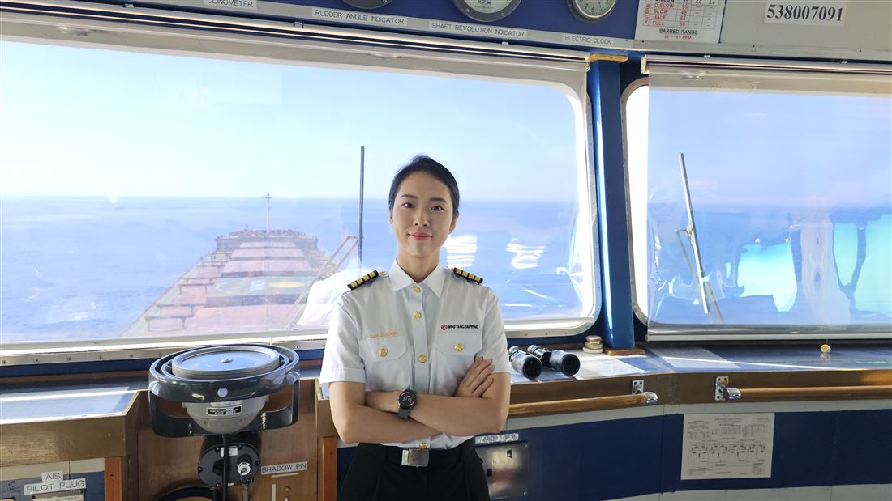
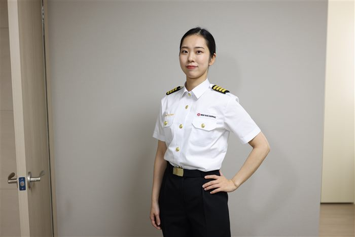

PROFILE
여성 항해사 500명 중 3명, 그리고 선장
바다를 선택하다
1993년 3월 19일 부산광역시에서 태어났습니다. 오빠가 한국해양대학교에 다니고 있었던 것이 자연스럽게 진로에 영향을 주었고, 같은 학교 해사수송과학부에 진학했습니다. 입학 당시 동기 400명 중 여학생은 약 60명이었습니다.
3%의 항해사로
졸업 후 승선한 회사에서는 항해사 500명 중 여성이 단 3명뿐이었습니다. 흔치 않은 환경에서 2016년 2월 삼등항해사로 첫 승선해 이등항해사를 거쳐 2020년 1월 일등항해사로 승진했습니다.
삼등항해사에서 선장까지
부산·광양·홍콩·베트남·태국을 잇는 항로에서 6개월 승선, 1개월 휴가를 반복하며 컨테이너선의 갑판을 지켰고, 2025년 4월 코리아쉽메니져스 소속 선장으로 승격했습니다. 승선 회사별 이력은 항해 일지에서 계급장과 함께 확인할 수 있습니다.
기록하는 항해사
현장의 기록은 세 권의 책으로 남겼고, 진로 고민을 나누는 자리는 방송과 강연으로 이어지고 있습니다. 저서와 미디어 출연에서 더 볼 수 있고, 진로 고민은 항해 상담실에서 나눌 수 있습니다.

ON THE BRIDGE · 선교에서

- NAME
- 김승주
- BORN
- 1993.03.19 · 부산광역시
- EDUCATION
- 한국해양대학교 해사수송과학부 학사
- COMPANY
- 코리아쉽메니져스
- RANK
- 선장 (Master Mariner)
- SINCE
- 2025.04